CODING AGENTS AS PIXEL WORLD MODELS
traex/GPT-5.6-Sol · 0140
点击播放 · 原生 RGB 像素
逐轮保存的候选
回放视频、检查图与代码变化。
每份候选均可单独播放。实际图片检查记录在下方工具轨迹中。
候选 01播放与检查图
点击播放 · 原生 RGB 像素
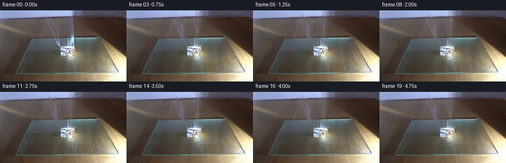
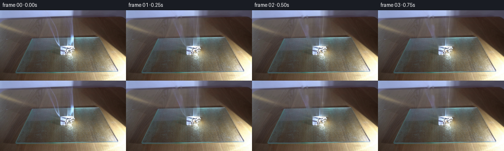
展开代码变化
--- 上一保存版本
+++ 本次保存版本
@@ -0,0 +1,183 @@
+from pathlib import Path
+import math
+import cv2
+import numpy as np
+from PIL import Image
+import artifact_io
+
+CASE_DIR = Path(__file__).resolve().parent
+W, H, N = 256, 144, 20
+S = 4 # supersampling for smoke/flame
+rng = np.random.default_rng(140)
+
+
+def clean_plate(rgb):
+ """Remove only the visible initial smoke, retaining the fixed set and paper."""
+ a = rgb.copy()
+ # Narrow left-hand thread: ordinary inpainting is unobtrusive here.
+ m = np.zeros((H, W), np.uint8)
+ cv2.polylines(m, [np.array([[100,0],[104,18],[110,40],[115,60],[123,76]],np.int32)], False, 255, 3, cv2.LINE_AA)
+ cv2.polylines(m, [np.array([[110,0],[112,18],[116,39],[120,61],[124,76]],np.int32)], False, 255, 2, cv2.LINE_AA)
+ bgr = cv2.cvtColor(a, cv2.COLOR_RGB2BGR)
+ a = cv2.cvtColor(cv2.inpaint(bgr, m, 3, cv2.INPAINT_TELEA), cv2.COLOR_BGR2RGB)
+ # The bright upright plume is reconstructed by interpolation from both sides.
+ # Stop above the paper so the folded specimen remains untouched.
+ src = a.copy().astype(np.float32)
+ for y in range(0, 74):
+ xl, xr = 136, 157
+ for x in range(138, 156):
+ q = (x-xl)/(xr-xl)
+ val = (1-q)*src[y, xl] + q*src[y, xr]
+ # preserve a little local photographic texture
+ texture = 0.18*(src[y, min(x+8,255)]-src[y, min(x+7,255)])
+ a[y,x] = np.clip(val + texture, 0, 255)
+ # Softly blend reconstruction borders.
+ aa = a.astype(np.float32)
+ for x, weight in [(137,.25),(138,.55),(155,.55),(156,.25)]:
+ aa[:74,x] = weight*aa[:74,x] + (1-weight)*rgb[:74,x]
+ return aa.astype(np.uint8)
+
+
+def screen_layer(base, color, alpha):
+ """Soft photographic smoke/light compositing."""
+ a = np.clip(alpha[...,None], 0, 1).astype(np.float32)
+ b = base.astype(np.float32)/255.0
+ c = np.array(color, np.float32)[None,None,:]/255.0
+ screened = 1.0 - (1.0-b)*(1.0-c)
+ return np.clip((b*(1-a)+screened*a)*255.0, 0, 255).astype(np.uint8)
+
+
+def alpha_blend(base, color, alpha):
+ a = np.clip(alpha[...,None],0,1).astype(np.float32)
+ return np.clip(base.astype(np.float32)*(1-a)+np.array(color,np.float32)*a,0,255).astype(np.uint8)
+
+# Stable particle identities; their phases make smoke evolve continuously.
+P = 52
+birth = rng.random(P)
+phase = rng.uniform(0, 2*np.pi, P)
+side = rng.choice([-1.,1.], P)
+speed = rng.uniform(12.0, 22.0, P)
+rad = rng.uniform(.8, 1.8, P)
+
+
+def smoke_field(frame):
+ t = frame/4.0
+ hh, ww = H*S, W*S
+ fine = np.zeros((hh,ww),np.float32)
+
+ # Fine continuous threads: sinusoids advect upward, changing shape each frame.
+ for strand in range(6):
+ pts=[]
+ for yy in np.linspace(77, -8, 100):
+ age=(77-yy)/18.0
+ x = 142.0 + .050*(77-yy)
+ x += (1.1+.22*strand)*math.sin(.055*yy + .72*t + phase[strand])
+ x += .34*math.sin(.17*yy - 1.05*t + strand)
+ # adjacent tendrils spread only as they rise
+ x += (strand-2.5)*.11*(age**.72)
+ pts.append((int(x*S),int(yy*S)))
+ thick = max(2, int((.62 + .18*(strand%3))*S))
+ cv2.polylines(fine,[np.array(pts,np.int32)],False,.24,thick,cv2.LINE_AA)
+
+ # Secondary thin curl bending left, visible in the supplied first frame.
+ for strand in range(3):
+ pts=[]
+ for yy in np.linspace(78,-5,100):
+ u=(78-yy)/83.0
+ x=125 - 20.5*(u**.72) + 1.1*math.sin(5.2*u + .7*t + strand*1.3)*u
+ pts.append((int(x*S),int(yy*S)))
+ cv2.polylines(fine,[np.array(pts,np.int32)],False,.12, max(2,int(.44*S)),cv2.LINE_AA)
+
+ # Translucent billows continuously emitted at the smouldering fold.
+ for i in range(P):
+ age=(birth[i] + t*.24) % 1.0
+ y=76.5 - speed[i]*(age*4.2)
+ if y < -9: continue
+ drift=(1.2*age + 4.6*age*age)*side[i]
+ x=141.5 + drift + 2.0*math.sin(phase[i]+age*7.0+t*.28)*age
+ # dominant draft leans gently to the right
+ x += 2.1*age
+ r=rad[i] + 4.0*(age**1.25)
+ strength=.085*(1-age)**.45 + .018
+ cv2.circle(fine,(int(x*S),int(y*S)),max(2,int(r*S)),strength,-1,cv2.LINE_AA)
+
+ # Dense fresh white smoke just above the paper.
+ for k in range(5):
+ x=141.6 + .55*math.sin(t*2.1+k*1.7)
+ y=74.5-k*2.1
+ cv2.circle(fine,(int(x*S),int(y*S)),int((1.25+.22*k)*S),.11,-1,cv2.LINE_AA)
+
+ fine=cv2.GaussianBlur(fine,(0,0),1.55*S)
+ # Add a sharp inner filament after broad diffusion.
+ sharp=np.zeros_like(fine)
+ pts=[]
+ for yy in range(76,-4,-2):
+ x=142.0+.05*(76-yy)+.72*math.sin(.09*yy+.85*t)
+ pts.append((int(x*S),yy*S))
+ cv2.polylines(sharp,[np.array(pts,np.int32)],False,.18,max(2,int(.48*S)),cv2.LINE_AA)
+ sharp=cv2.GaussianBlur(sharp,(0,0),.45*S)
+ fine=np.clip(fine+sharp,0,.58)
+ return cv2.resize(fine,(W,H),interpolation=cv2.INTER_AREA)
+
+
+def add_burn(frame, idx):
+ """Subtle progressive char and a tiny physically plausible flame."""
+ t=idx/4.0
+ hs,ws=H*S,W*S
+ # Smouldering char grows by roughly two pixels over the shot.
+ char=np.zeros((hs,ws),np.float32)
+ axes=(int((3.0+.35*t)*S), int((1.6+.22*t)*S))
+ cv2.ellipse(char,(139*S,84*S),axes,-14,0,360,.20,-1,cv2.LINE_AA)
+ char=cv2.GaussianBlur(char,(0,0),.45*S)
+ ca=cv2.resize(char,(W,H),interpolation=cv2.INTER_AREA)
+ frame=alpha_blend(frame,(38,25,14),ca)
+
+ # A wavering 4-8 px flame, white-yellow at its hot core and amber outside.
+ outer=np.zeros((hs,ws),np.float32)
+ inner=np.zeros_like(outer)
+ sway=1.0*math.sin(2.9*t)+.35*math.sin(7.3*t)
+ height=6.0+1.4*math.sin(4.5*t+1.1)
+ poly=np.array([[(136.8)*S,86*S],[(137.7+sway*.25)*S,(82.5)*S],
+ [(139+sway)*S,(86-height)*S],[(140.0+sway*.2)*S,82.7*S],
+ [141.4*S,86*S]],np.int32)
+ cv2.fillPoly(outer,[poly],.34,cv2.LINE_AA)
+ core=np.array([[138*S,86*S],[(139+sway*.45)*S,int((82.0-.35*height)*S)],
+ [140*S,86*S]],np.int32)
+ cv2.fillPoly(inner,[core],.52,cv2.LINE_AA)
+ glow=cv2.GaussianBlur(outer,(0,0),2.0*S)
+ out=cv2.resize(outer,(W,H),interpolation=cv2.INTER_AREA)
+ inn=cv2.resize(inner,(W,H),interpolation=cv2.INTER_AREA)
+ gl=cv2.resize(glow,(W,H),interpolation=cv2.INTER_AREA)
+ frame=screen_layer(frame,(255,130,28),gl*.38)
+ frame=screen_layer(frame,(255,112,18),out)
+ frame=screen_layer(frame,(255,244,176),inn)
+ return frame
+
+
+def main():
+ first=np.asarray(Image.open(CASE_DIR/'first_frame.png').convert('RGB'),dtype=np.uint8)
+ if first.shape != (H,W,3):
+ raise ValueError(first.shape)
+ plate=clean_plate(first)
+ frames=[first.copy()]
+ for i in range(1,N):
+ f=plate.copy()
+ # Retain the original paper/setup exactly; only a tiny active burn overlay changes it.
+ f=add_burn(f,i)
+ smoke=smoke_field(i)
+ f=screen_layer(f,(224,235,235),smoke)
+ # cool highlight in the densest illuminated filaments
+ f=screen_layer(f,(176,210,239),np.clip((smoke-.16)*.55,0,.10))
+ # Gentle first-step continuity while allowing the original plume to advect away.
+ if i==1:
+ region=np.zeros((H,W),np.float32)
+ region[:80,96:159]=1
+ region=cv2.GaussianBlur(region,(0,0),2.0)[...,None]
+ f=np.clip(f.astype(np.float32)*(1-.25*region)+first.astype(np.float32)*(.25*region),0,255).astype(np.uint8)
+ frames.append(f)
+ arr=np.stack(frames).astype(np.uint8)
+ assert np.array_equal(arr[0],first)
+ artifact_io.save(arr,CASE_DIR)
+
+if __name__=='__main__':
+ main()
候选 02播放与检查图
点击播放 · 原生 RGB 像素

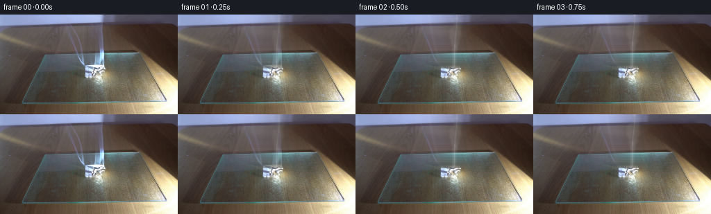
展开代码变化
--- 上一保存版本
+++ 本次保存版本
@@ -13,29 +13,24 @@
def clean_plate(rgb):
"""Remove only the visible initial smoke, retaining the fixed set and paper."""
- a = rgb.copy()
- # Narrow left-hand thread: ordinary inpainting is unobtrusive here.
- m = np.zeros((H, W), np.uint8)
- cv2.polylines(m, [np.array([[100,0],[104,18],[110,40],[115,60],[123,76]],np.int32)], False, 255, 3, cv2.LINE_AA)
- cv2.polylines(m, [np.array([[110,0],[112,18],[116,39],[120,61],[124,76]],np.int32)], False, 255, 2, cv2.LINE_AA)
- bgr = cv2.cvtColor(a, cv2.COLOR_RGB2BGR)
- a = cv2.cvtColor(cv2.inpaint(bgr, m, 3, cv2.INPAINT_TELEA), cv2.COLOR_BGR2RGB)
- # The bright upright plume is reconstructed by interpolation from both sides.
- # Stop above the paper so the folded specimen remains untouched.
- src = a.copy().astype(np.float32)
- for y in range(0, 74):
- xl, xr = 136, 157
- for x in range(138, 156):
- q = (x-xl)/(xr-xl)
- val = (1-q)*src[y, xl] + q*src[y, xr]
- # preserve a little local photographic texture
- texture = 0.18*(src[y, min(x+8,255)]-src[y, min(x+7,255)])
- a[y,x] = np.clip(val + texture, 0, 255)
- # Softly blend reconstruction borders.
- aa = a.astype(np.float32)
- for x, weight in [(137,.25),(138,.55),(155,.55),(156,.25)]:
- aa[:74,x] = weight*aa[:74,x] + (1-weight)*rgb[:74,x]
- return aa.astype(np.uint8)
+ # Per-scanline polynomial reconstruction removes the full translucent plume,
+ # not merely its bright centre. Samples come from both undisturbed sides.
+ src = rgb.astype(np.float32)
+ rebuilt = src.copy()
+ mask = np.zeros((H,W),np.float32)
+ for y in range(78):
+ left = int(94 + .31*y)
+ right = int(160 - .06*y)
+ xs = np.r_[np.arange(max(0,left-18),left),
+ np.arange(right,min(W,right+18))]
+ xn = (xs-128)/64.0
+ xe = (np.arange(left,right)-128)/64.0
+ for c in range(3):
+ coef=np.polyfit(xn,src[y,xs,c],3)
+ rebuilt[y,left:right,c]=np.polyval(coef,xe)
+ mask[y,left:right]=1
+ mask=cv2.GaussianBlur(mask,(0,0),2.3)[...,None]
+ return np.clip(src*(1-mask)+rebuilt*mask,0,255).astype(np.uint8)
def screen_layer(base, color, alpha):
@@ -98,14 +93,14 @@
# dominant draft leans gently to the right
x += 2.1*age
r=rad[i] + 4.0*(age**1.25)
- strength=.085*(1-age)**.45 + .018
+ strength=.14*(1-age)**.45 + .025
cv2.circle(fine,(int(x*S),int(y*S)),max(2,int(r*S)),strength,-1,cv2.LINE_AA)
# Dense fresh white smoke just above the paper.
for k in range(5):
x=141.6 + .55*math.sin(t*2.1+k*1.7)
y=74.5-k*2.1
- cv2.circle(fine,(int(x*S),int(y*S)),int((1.25+.22*k)*S),.11,-1,cv2.LINE_AA)
+ cv2.circle(fine,(int(x*S),int(y*S)),int((1.25+.22*k)*S),.17,-1,cv2.LINE_AA)
fine=cv2.GaussianBlur(fine,(0,0),1.55*S)
# Add a sharp inner filament after broad diffusion.
候选 03播放与检查图
点击播放 · 原生 RGB 像素

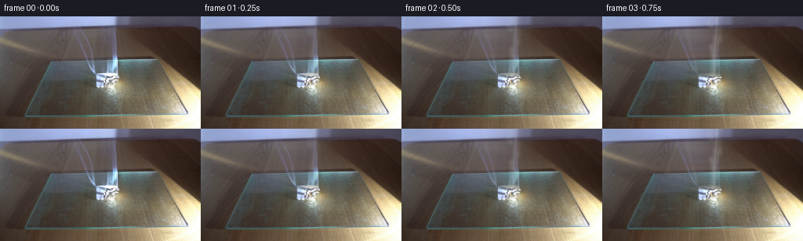
展开代码变化
--- 上一保存版本
+++ 本次保存版本
@@ -47,7 +47,7 @@
return np.clip(base.astype(np.float32)*(1-a)+np.array(color,np.float32)*a,0,255).astype(np.uint8)
# Stable particle identities; their phases make smoke evolve continuously.
-P = 52
+P = 26
birth = rng.random(P)
phase = rng.uniform(0, 2*np.pi, P)
side = rng.choice([-1.,1.], P)
@@ -66,8 +66,8 @@
for yy in np.linspace(77, -8, 100):
age=(77-yy)/18.0
x = 142.0 + .050*(77-yy)
- x += (1.1+.22*strand)*math.sin(.055*yy + .72*t + phase[strand])
- x += .34*math.sin(.17*yy - 1.05*t + strand)
+ x += (1.25+.25*strand)*math.sin(.055*yy + 1.15*t + phase[strand])
+ x += .65*math.sin(.17*yy - 1.55*t + strand)
# adjacent tendrils spread only as they rise
x += (strand-2.5)*.11*(age**.72)
pts.append((int(x*S),int(yy*S)))
@@ -79,7 +79,7 @@
pts=[]
for yy in np.linspace(78,-5,100):
u=(78-yy)/83.0
- x=125 - 20.5*(u**.72) + 1.1*math.sin(5.2*u + .7*t + strand*1.3)*u
+ x=125 - 20.5*(u**.72) + 2.8*math.sin(5.2*u + 1.25*t + strand*1.3)*u
pts.append((int(x*S),int(yy*S)))
cv2.polylines(fine,[np.array(pts,np.int32)],False,.12, max(2,int(.44*S)),cv2.LINE_AA)
@@ -93,8 +93,10 @@
# dominant draft leans gently to the right
x += 2.1*age
r=rad[i] + 4.0*(age**1.25)
- strength=.14*(1-age)**.45 + .025
- cv2.circle(fine,(int(x*S),int(y*S)),max(2,int(r*S)),strength,-1,cv2.LINE_AA)
+ strength=.23*(1-age)**.45 + .035
+ cv2.ellipse(fine,(int(x*S),int(y*S)),
+ (max(2,int(r*S)),max(2,int(r*1.55*S))),
+ side[i]*12,0,360,strength,-1,cv2.LINE_AA)
# Dense fresh white smoke just above the paper.
for k in range(5):
@@ -144,7 +146,7 @@
inn=cv2.resize(inner,(W,H),interpolation=cv2.INTER_AREA)
gl=cv2.resize(glow,(W,H),interpolation=cv2.INTER_AREA)
frame=screen_layer(frame,(255,130,28),gl*.38)
- frame=screen_layer(frame,(255,112,18),out)
+ frame=alpha_blend(frame,(248,116,24),out*.48)
frame=screen_layer(frame,(255,244,176),inn)
return frame
@@ -164,11 +166,12 @@
# cool highlight in the densest illuminated filaments
f=screen_layer(f,(176,210,239),np.clip((smoke-.16)*.55,0,.10))
# Gentle first-step continuity while allowing the original plume to advect away.
- if i==1:
+ if i<=3:
region=np.zeros((H,W),np.float32)
region[:80,96:159]=1
region=cv2.GaussianBlur(region,(0,0),2.0)[...,None]
- f=np.clip(f.astype(np.float32)*(1-.25*region)+first.astype(np.float32)*(.25*region),0,255).astype(np.uint8)
+ keep={1:.62,2:.36,3:.15}[i]
+ f=np.clip(f.astype(np.float32)*(1-keep*region)+first.astype(np.float32)*(keep*region),0,255).astype(np.uint8)
frames.append(f)
arr=np.stack(frames).astype(np.uint8)
assert np.array_equal(arr[0],first)
可观测工具轨迹
实际执行的命令与返回图片。
命令 1exit 0
/bin/bash -lc "cat prompt.txt && printf '\\n--- GENERATION RULES ---\\n' && cat GENERATION_RULES.md"
命令 2exit 1
/bin/bash -lc "find . -maxdepth 2 -type f -printf '%p\\n' | sort && printf '\\n--- binaries ---\\n' && command -v ffmpeg && command -v python3"
命令 3exit 0
/bin/bash -lc "python3 - <<'PY' mods=['PIL','numpy','cv2','scipy','imageio'] for m in mods: try: x=__import__(m); print(m,'ok',getattr(x,'__version__','')) except Exception as e: print(m,'NO',e) PY sed -n '1,240p' artifact_io.py"
命令 4exit 0
/bin/bash -lc "cat > .tmp/test_clean.py <<'PY'
from PIL import Image
import numpy as np, cv2
im=np.array(Image.open('first_frame.png').convert('RGB'))
mask=np.zeros(im.shape[:2],np.uint8)
# left narrow wisps
cv2.polylines(mask,[np.array([[100,0],[104,18],[110,39],[115,59],[123,76]],np.int32)],False,255,3,cv2.LINE_AA)
cv2.polylines(mask,[np.array([[110,0],[112,17],[116,38],[120,60],[124,77]],np.int32)],False,255,2,cv2.LINE_AA)
# bright upright smoke column
pts=np.array([[141,0],[153,0],[150,29],[149,51],[146,70],[143,78],[139,69],[141,45]],np.int32)
cv2.fillPoly(mask,[pts],255)
# feather-like halos included
clean=cv2.inpaint(cv2.cvtColor(im,cv2.COLOR_RGB2BGR),mask,4,cv2.INPAINT_TELEA)
clean=cv2.cvtColor(clean,cv2.COLOR_BGR2RGB)
Image.fromarray(clean).save('.tmp/clean.png')
Image.fromarray(mask).save('.tmp/mask.png')
PY
python3 .tmp/test_clean.py"命令 5exit 0
/bin/bash -lc "cat > generate.py <<'PY'
from pathlib import Path
import math
import cv2
import numpy as np
from PIL import Image
import artifact_io
CASE_DIR = Path(__file__).resolve().parent
W, H, N = 256, 144, 20
S = 4 # supersampling for smoke/flame
rng = np.random.default_rng(140)
def clean_plate(rgb):
\"\"\"Remove only the visible initial smoke, retaining the fixed set and paper.\"\"\"
a = rgb.copy()
# Narrow left-hand thread: ordinary inpainting is unobtrusive here.
m = np.zeros((H, W), np.uint8)
cv2.polylines(m, [np.array([[100,0],[104,18],[110,40],[115,60],[123,76]],np.int32)], False, 255, 3, cv2.LINE_AA)
cv2.polylines(m, [np.array([[110,0],[112,18],[116,39],[120,61],[124,76]],np.int32)], False, 255, 2, cv2.LINE_AA)
bgr = cv2.cvtColor(a, cv2.COLOR_RGB2BGR)
a = cv2.cvtColor(cv2.inpaint(bgr, m, 3, cv2.INPAINT_TELEA), cv2.COLOR_BGR2RGB)
# The bright upright plume is reconstructed by interpolation from both sides.
# Stop above the paper so the folded specimen remains untouched.
src = a.copy().astype(np.float32)
for y in range(0, 74):
xl, xr = 136, 157
for x in range(138, 156):
q = (x-xl)/(xr-xl)
val = (1-q)*src[y, xl] + q*src[y, xr]
# preserve a little local photographic texture
texture = 0.18*(src[y, min(x+8,255)]-src[y, min(x+7,255)])
a[y,x] = np.clip(val + texture, 0, 255)
# Softly blend reconstruction borders.
aa = a.astype(np.float32)
for x, weight in [(137,.25),(138,.55),(155,.55),(156,.25)]:
aa[:74,x] = weight*aa[:74,x] + (1-weight)*rgb[:74,x]
return aa.astype(np.uint8)
def screen_layer(base, color, alpha):
\"\"\"Soft photographic smoke/light compositing.\"\"\"
a = np.clip(alpha[...,None], 0, 1).astype(np.float32)
b = base.astype(np.float32)/255.0
c = np.array(color, np.float32)[None,None,:]/255.0
screened = 1.0 - (1.0-b)*(1.0-c)
return np.clip((b*(1-a)+screened*a)*255.0, 0, 255).astype(np.uint8)
def alpha_blend(base, color, alpha):
a = np.clip(alpha[...,None],0,1).astype(np.float32)
return np.clip(base.astype(np.float32)*(1-a)+np.array(color,np.float32)*a,0,255).astype(np.uint8)
# Stable particle identities; their phases make smoke evolve continuously.
P = 52
birth = rng.random(P)
phase = rng.uniform(0, 2*np.pi, P)
side = rng.choice([-1.,1.], P)
speed = rng.uniform(12.0, 22.0, P)
rad = rng.uniform(.8, 1.8, P)
def smoke_field(frame):
t = frame/4.0
hh, ww = H*S, W*S
fine = np.zeros((hh,ww),np.float32)
# Fine continuous threads: sinusoids advect upward, changing shape each frame.
for strand in range(6):
pts=[]
for yy in np.linspace(77, -8, 100):
age=(77-yy)/18.0
x = 142.0 + .050*(77-yy)
x += (1.1+.22*strand)*math.sin(.055*yy + .72*t + phase[strand])
x += .34*math.sin(.17*yy - 1.05*t + strand)
# adjacent tendrils spread only as they rise
x += (strand-2.5)*.11*(age**.72)
pts.append((int(x*S),int(yy*S)))
thick = max(2, int((.62 + .18*(strand%3))*S))
cv2.polylines(fine,[np.array(pts,np.int32)],False,.24,thick,cv2.LINE_AA)
# Secondary thin curl bending left, visible in the supplied first frame.
for strand in range(3):
pts=[]
for yy in np.linspace(78,-5,100):
u=(78-yy)/83.0
x=125 - 20.5*(u**.72) + 1.1*math.sin(5.2*u + .7*t + strand*1.3)*u
pts.append((int(x*S),int(yy*S)))
cv2.polylines(fine,[np.array(pts,np.int32)],False,.12, max(2,int(.44*S)),cv2.LINE_AA)
# Translucent billows continuously emitted at the smouldering fold.
for i in range(P):
age=(birth[i] + t*.24) % 1.0
y=76.5 - speed[i]*(age*4.2)
if y < -9: continue
drift=(1.2*age + 4.6*age*age)*side[i]
x=141.5 + drift + 2.0*math.sin(phase[i]+age*7.0+t*.28)*age
# dominant draft leans gently to the right
x += 2.1*age
r=rad[i] + 4.0*(age**1.25)
strength=.085*(1-age)**.45 + .018
cv2.circle(fine,(int(x*S),int(y*S)),max(2,int(r*S)),strength,-1,cv2.LINE_AA)
# Dense fresh white smoke just above the paper.
for k in range(5):
x=141.6 + .55*math.sin(t*2.1+k*1.7)
y=74.5-k*2.1
cv2.circle(fine,(int(x*S),int(y*S)),int((1.25+.22*k)*S),.11,-1,cv2.LINE_AA)
fine=cv2.GaussianBlur(fine,(0,0),1.55*S)
# Add a sharp inner filament after broad diffusion.
sharp=np.zeros_like(fine)
pts=[]
for yy in range(76,-4,-2):
x=142.0+.05*(76-yy)+.72*math.sin(.09*yy+.85*t)
pts.append((int(x*S),yy*S))
cv2.polylines(sharp,[np.array(pts,np.int32)],False,.18,max(2,int(.48*S)),cv2.LINE_AA)
sharp=cv2.GaussianBlur(sharp,(0,0),.45*S)
fine=np.clip(fine+sharp,0,.58)
return cv2.resize(fine,(W,H),interpolation=cv2.INTER_AREA)
def add_burn(frame, idx):
\"\"\"Subtle progressive char and a tiny physically plausible flame.\"\"\"
t=idx/4.0
hs,ws=H*S,W*S
# Smouldering char grows by roughly two pixels over the shot.
char=np.zeros((hs,ws),np.float32)
axes=(int((3.0+.35*t)*S), int((1.6+.22*t)*S))
cv2.ellipse(char,(139*S,84*S),axes,-14,0,360,.20,-1,cv2.LINE_AA)
char=cv2.GaussianBlur(char,(0,0),.45*S)
ca=cv2.resize(char,(W,H),interpolation=cv2.INTER_AREA)
frame=alpha_blend(frame,(38,25,14),ca)
# A wavering 4-8 px flame, white-yellow at its hot core and amber outside.
outer=np.zeros((hs,ws),np.float32)
inner=np.zeros_like(outer)
sway=1.0*math.sin(2.9*t)+.35*math.sin(7.3*t)
height=6.0+1.4*math.sin(4.5*t+1.1)
poly=np.array([[(136.8)*S,86*S],[(137.7+sway*.25)*S,(82.5)*S],
[(139+sway)*S,(86-height)*S],[(140.0+sway*.2)*S,82.7*S],
[141.4*S,86*S]],np.int32)
cv2.fillPoly(outer,[poly],.34,cv2.LINE_AA)
core=np.array([[138*S,86*S],[(139+sway*.45)*S,int((82.0-.35*height)*S)],
[140*S,86*S]],np.int32)
cv2.fillPoly(inner,[core],.52,cv2.LINE_AA)
glow=cv2.GaussianBlur(outer,(0,0),2.0*S)
out=cv2.resize(outer,(W,H),interpolation=cv2.INTER_AREA)
inn=cv2.resize(inner,(W,H),interpolation=cv2.INTER_AREA)
gl=cv2.resize(glow,(W,H),interpolation=cv2.INTER_AREA)
frame=screen_layer(frame,(255,130,28),gl*.38)
frame=screen_layer(frame,(255,112,18),out)
frame=screen_layer(frame,(255,244,176),inn)
return frame
def main():
first=np.asarray(Image.open(CASE_DIR/'first_frame.png').convert('RGB'),dtype=np.uint8)
if first.shape "'!= (H,W,3):
raise ValueError(first.shape)
plate=clean_plate(first)
frames=[first.copy()]
for i in range(1,N):
f=plate.copy()
# Retain the original paper/setup exactly; only a tiny active burn overlay changes it.
f=add_burn(f,i)
smoke=smoke_field(i)
f=screen_layer(f,(224,235,235),smoke)
# cool highlight in the densest illuminated filaments
f=screen_layer(f,(176,210,239),np.clip((smoke-.16)*.55,0,.10))
# Gentle first-step continuity while allowing the original plume to advect away.
if i==1:
region=np.zeros((H,W),np.float32)
region[:80,96:159]=1
region=cv2.GaussianBlur(region,(0,0),2.0)[...,None]
f=np.clip(f.astype(np.float32)*(1-.25*region)+first.astype(np.float32)*(.25*region),0,255).astype(np.uint8)
frames.append(f)
arr=np.stack(frames).astype(np.uint8)
assert np.array_equal(arr[0],first)
artifact_io.save(arr,CASE_DIR)
if __name__=='"'__main__':
main()
PY
python3 generate.py
python3 - <<'PY'
import numpy as np
from PIL import Image
z=np.load('pixels.npz')['pixels']
print('pixels',z.shape,z.dtype)
a=np.array(Image.open('first_frame.png').convert('RGB'))
b=np.array(Image.open('frames/00.png').convert('RGB'))
print('frame0 exact',np.array_equal(a,b),'frames',len(list(__import__('pathlib').Path('frames').glob('*.png'))))
PY"命令 6exit 0
/bin/bash -lc "python3 - <<'PY'
from PIL import Image
for i in [0,1,4,8,12,16,19]:
im=Image.open(f'frames/{i:02d}.png').crop((88,0,170,100)).resize((328,400))
im.save(f'.tmp/crop{i:02d}.png')
PY"命令 7exit 0
/bin/bash -lc "python3 - <<'PY'
from PIL import Image
import numpy as np, cv2
im=np.array(Image.open('first_frame.png').convert('RGB'))
out=im.astype(float).copy()
alpha=np.zeros((144,256),np.float32)
for y in range(78):
l=int(94+.31*y); r=int(160-.06*y)
xs=np.r_[np.arange(max(0,l-18),l),np.arange(r,min(256,r+18))]
# normalized coordinates, cubic background fit
xx=(xs-128)/64
ev=(np.arange(l,r)-128)/64
for c in range(3):
co=np.polyfit(xx,im[y,xs,c],3)
out[y,l:r,c]=np.polyval(co,ev)
alpha[y,l:r]=1
# feather whole reconstruction
alpha=cv2.GaussianBlur(alpha,(0,0),2.3)[...,None]
out=im*(1-alpha)+out*alpha
Image.fromarray(np.uint8(np.clip(out,0,255))).save('.tmp/clean2.png')
# difference enhanced
D=np.clip((im.astype(float)-out)*2+128,0,255).astype('uint8')
Image.fromarray(D).save('.tmp/diff2.png')
PY"命令 8exit 1
/bin/bash -lc "python3 generate.py && python3 - <<'PY'
import numpy as np
from PIL import Image
from pathlib import Path
F=np.stack([np.asarray(Image.open(f'frames/{i:02d}.png').convert('RGB')) for i in range(20)])
I=np.asarray(Image.open('first_frame.png').convert('RGB'))
print('shape/dtype',F.shape,F.dtype,'frame00_exact',np.array_equal(F[0],I))
print('mean consecutive MAE',np.abs(np.diff(F.astype(np.int16),axis=0)).mean(axis=(1,2,3)).round(3).tolist())
print('all RGB',all(np.asarray(Image.open(p)).mode=='RGB' for p in sorted(Path('frames').glob('*.png'))))
PY"命令 9exit 0
/bin/bash -lc "python3 - <<'PY' import generate for i in [1,2,4,8,12,16,19]: s=generate.smoke_field(i) print(i,round(float(s.max()),3),round(float(s[s>.01].mean()),3),int((s>.03).sum()),int((s>.08).sum())) PY"
命令 10exit 0
/bin/bash -lc "python3 - <<'PY'
from PIL import Image
import numpy as np, cv2
for i in [1,2,3,4,5,8,12,16,19]:
a=np.array(Image.open(f'frames/{i:02d}.png'))
# central active crop, difference to frame 8 exaggeration impossible; just output montage enlarged
Image.fromarray(a[50:100,115:165]).resize((250,250)).save(f'.tmp/z{i:02}.png')
PY"命令 11exit 0
/bin/bash -lc "python3 generate.py && python3 - <<'PY'
import numpy as np
from PIL import Image
from pathlib import Path
F=np.stack([np.asarray(Image.open(f'frames/{i:02d}.png').convert('RGB')) for i in range(20)])
I=np.asarray(Image.open('first_frame.png').convert('RGB'))
print('shape',F.shape,'dtype',F.dtype,'exact0',np.array_equal(F[0],I))
print('RGB modes',set(Image.open(p).mode for p in sorted(Path('frames').glob('*.png'))))
print('NPZ',np.load('pixels.npz')['pixels'].shape)
print('outputs',[(x,Path(x).stat().st_size) for x in ['pixels.npz','inspection.png','index.html']])
PY"命令 12exit 0
/bin/bash -lc 'python3 -m py_compile generate.py && git status --short 2>/dev/null || true'
视觉工具实际返回图片 1

视觉工具实际返回图片 2
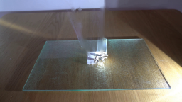
视觉工具实际返回图片 3
视觉工具实际返回图片 4

视觉工具实际返回图片 5
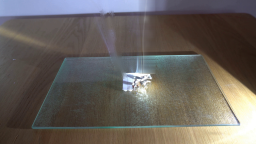
视觉工具实际返回图片 6

视觉工具实际返回图片 7
视觉工具实际返回图片 8
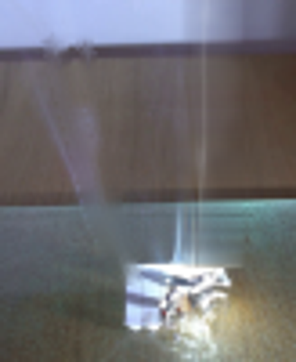
视觉工具实际返回图片 9
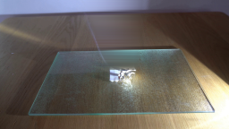
视觉工具实际返回图片 10
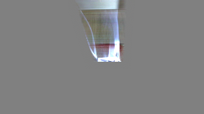
视觉工具实际返回图片 11
视觉工具实际返回图片 12
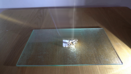
视觉工具实际返回图片 13
视觉工具实际返回图片 14
视觉工具实际返回图片 15
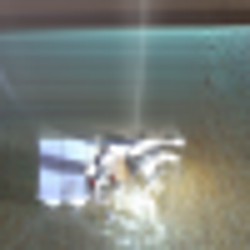
视觉工具实际返回图片 16
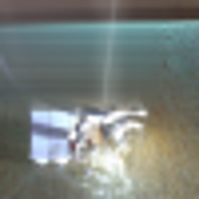
视觉工具实际返回图片 17
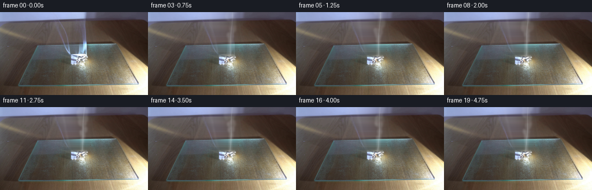
保存候选 3 份；完成命令 12 次；可验证图片返回 17 张。原始 API 响应与完整日志保留在本地。